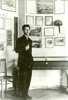
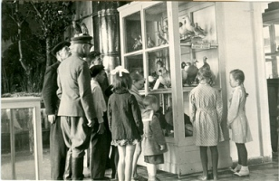
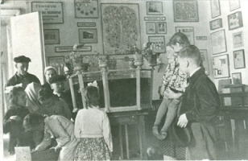
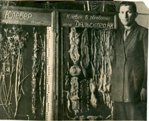

|  | С наступлением Великой Отечественной войны музей закрывается и вновь открывается для посетителей лишь 5 марта 1944 г. Отдел природы восстанавливается в довоенном виде под руководством К.Ю. Чубенко, географа, аспиранта СГУ. В экспозицию добавляются новые материалы, в том числе о разработке Елшанского газового месторождения, открытого в годы ВОв. В 1947 гг. отдел природы реэкспонируется вернувшимся с войны Н.В. Щепотьевым. В его структуре выделяются следующие темы: геология и полезные ископаемые, география (рельеф, климат, природные зоны, воды и их использование, почвы), происхождение Земли и жизни на ней, происхождение человека, дарвинизм. |
| Н.В. Щепотьев в экспозиции перестроенного отдела природы. Фото 1947 г. |
|  |  |  |
| Фрагменты экспозиции отдела природы. Фото 1948 г. | Н.И. Дальский, зав. отделом природы в 1947-1948 гг. | |
В конце 1940-х – начале 1950-х гг. в общественно-политической жизни страны большое внимание уделяется сельскому хозяйству. Это находит отражение и в музейных экспозициях. В 1948 г. на августовской сессии ВАСХНИЛ завершается борьба двух направлений в биологической науке: «лысенковского» (мичуринская биология) и «вавиловского» (генетическое направление). Побеждает «мичуринская биология», которая принимается высшими государственными и партийными структурами в качестве официальной биологической науки. В октябре 1948 г. было принято Постановление ЦК ВКП (б) и Совета Министров СССР «О плане полезащитных лесонасаждений, внедрения травопольных севооборотов, строительства прудов и водоёмов для обеспечения устойчивых урожаев в степных и лесостепных районах европейской части СССР», так называемый «Сталинский план преобразования природы». Перед отделом были поставлены важные задачи, имевшие политическое звучание: отражение в экспозиции успехов победившего направления мичуринской биологической науки и реализации сталинского плана преобразования природы. Заведующий отделом Н.И. Дальский, специалист по сельскому хозяйству, в прошлом работник Всесоюзного института зернового хозяйства Юго-Востока (ВИЗХ), был уволен «как не выполнивший задач, поставленных перед отделом природы».